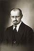
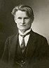
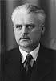
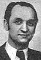

Prezidentai
| Nuotrauka |
Kadencija |
Vardas, pavardė |
| 1919-1920 |
Antanas Smetona |
|
|  |
1920-1926 |
Aleksandras Stulginskis |
|  |
1926-1926 |
Kazys Grinius |
 |
1926-1926 |
Jonas Staugaitis |
| 1926-1940 |
Antanas Smetona |
|
|  |
1940-1940 |
Antanas Merkys |
|  |
1940-1940 |
Justas Paleckis |
| 1992-1998 |
Algirdas Brazauskas |
|
| 1998-2003 |
Valdas Adamkus |
|
| 2003-2004 |
Rolandas Paksas |
|
 |
2004 |
Artūras Paulauskas |
| 2004-2009 |
Valdas Adamkus |
|
 |
2009-2018 |
Dalia Grybauskaitė |
© Eidenis Kasperavičius „Vaivorykštė“ 2017-2018
Į pradžią